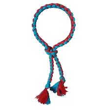

O kruang vermelho ponta azul claro representa uma evolução do nível intermediário dentro do Muay Thai. Nesta fase, o praticante já possui uma base bem consolidada e começa a desenvolver ainda mais precisão, velocidade e controle durante os treinos. Os golpes passam a ser aplicados com mais naturalidade, e o aluno começa a entender melhor o jogo de luta, combinando técnicas com mais fluidez. O timing, a distância e a leitura do oponente se tornam cada vez mais importantes. Os treinos são mais intensos e exigem maior resistência física e mental. O praticante já participa com mais frequência de sparrings leves a moderados, aprendendo a aplicar suas habilidades de forma mais realista. Além disso, o aluno começa a demonstrar mais confiança, disciplina e controle emocional.
Maior fluidez nos movimentos, melhor controle de luta e desenvolvimento de estratégia.
Entre 4 a 8 meses após o nível anterior.
Representa a transição entre força e técnica dentro do Muay Thai.
Desenvolver um lutador mais técnico, rápido e estratégico.
Treine com inteligência, não apenas com força. Observe e corrija seus erros.
O próximo nível é o Kruang Azul Claro Ponta Azul Escuro.